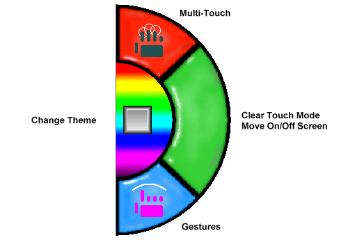

| My-T-Soft®: for Windows; Indestructible Keyboards and Indispensable Utilities; Version 1.80; User's Guide | ||
|---|---|---|
| Prev | Chapter 3. My-T-Soft Panels | Next |

Touch Panel
The Touch Panel can be enabled / disabled via the My-T-Soft menu. It is primarily meant for multi-touch capable devices running Windows Vista or later. It will appear on the right-hand side of My-T-Soft, unless there is not enough room to display the full touch panel, and there is room on the left-hand side. The logic determining Touch Panel location included the entire virtual space (for multiple monitors). When enabled, there are 4 areas that provide different features:
Change Theme
The multi-color (rainbow) area surrounding the blank key can be touched to change the current theme (based on the ThemeList and available themes).
Multi-Touch
Touch the Multi-Touch area to enable Multi-touch (when enabled, it will be indicated with lighter colored hand display). Using Multi-Touch allows you to press multiple keys at the same time, especially useful for Shift or Ctrl functions (or using both hands).
Gestures
Touch the Gestures area to enable Gestures (when enabled, it will be indicated with lighter colored hand display). Using Gestures enables the following options:
Pinch/Zoom - Bringing 2 fingers together in a pinch, will result in a size-down event, and expanding 2 fingers will result in a size-up event
Rotate - 2 fingers, one set, the other rotates around will result in a Change Theme event
Pan (press and move) - this will slide the My-T-Soft window, or operate like a standard click & move if you continue pressing
Two-Finger-Tap or Press-and-Tap - this will result in a right-click event (default option is to open the menu, but the right-click event action configurable via My-T-Soft Setup | Mouse Buttons)
Flicks
When in the normal mode (no Multi-Touch or Gestures), flick events can be sensed and processed. The standard setting will use vertical or horizontal flicks to move My-T-Soft to the edge of the screen, or a diagonal flick will result in a minimize event.
Clear / Dismiss / Recall
The large Green touch area will clear (turn off) the current touch mode (Multi-Touch or Gestures) and operate in the normal mode (Note: Flicks are supported in normal mode). If the current mode is currently "normal" (no Multi-Touch or Gestures), then a touch will move My-T-Soft off-screen. When off-screen, a touch will bring My-T-Soft back onscreen.
Technical Notes on the Touch Panel: For proper Touch Panel integration with the system, a system requires Windows Vista or later, a multi-touch display, and requires the existence of the MultiTouchDLL.DLL in the installation folder. (The MultiTouchDLL.DLL integrates various features and can be modified via the source code in the IMG Developer's Kit).